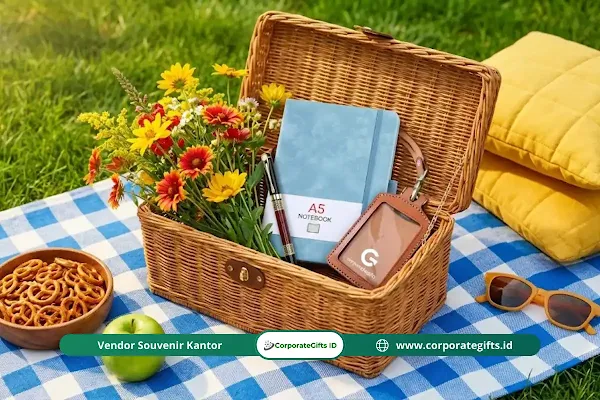

Corporate Gifts ID - Isi welcome kit kantor yang tepat adalah kunci utama mencegah turnover karyawan di bulan pertama. Paket penyambutan yang berisi barang fungsional, personal, dan relevan dengan peran divisi (seperti tim teknis, sales, atau magang) terbukti mampu meningkatkan keterikatan (engagement) dan loyalitas karyawan sejak hari pertama mereka bekerja.
Anda baru saja menyelesaikan proses rekrutmen yang melelahkan, menghabiskan anggaran besar, dan berhasil meyakinkan talenta terbaik untuk bergabung. Namun, di hari pertama mereka masuk, realita tidak seindah ekspektasi. Karyawan baru yang duduk canggung di meja kosong tanpa panduan sering merasa "asing". Momen ketidaknyamanan inilah yang memicu early turnover.
Seringkali perusahaan menganggap welcome kit hanya sebagai formalitas seremonial. Padahal, biaya menyiapkan paket penyambutan yang layak jauh lebih murah dibandingkan kerugian akibat karyawan yang resign dalam 3 bulan pertama. Isi welcome kit kantor bukan sekadar tumpukan merchandise; ini adalah bahasa kasih perusahaan yang berkata bahwa mereka siap menerima dan mendukung pertumbuhan karyawan.
Poin Kunci Isi Welcome Kit Kantor Berdampak Tinggi:
- Dampak Retensi: Memberikan welcome kit personal di Hari Pertama menurunkan risiko turnover dini hingga 82%.
- Konsep Spesifik Divisi: Kebutuhan tim developer, tim sales, dan karyawan magang berbeda secara fungsional.
- Nilai Utilitas Harian: Fokus pada perlengkapan kerja seperti tumbler vacuum, desk mat, kabel organizer, dan binder agenda.
- Sentuhan Emosional: Grafir nama personal dan kartu sambutan tulisan tangan menciptakan ikatan psikologis yang kokoh.
- Investasi Jangka Panjang: Estimasi anggaran Rp350.000 - Rp800.000 jauh lebih hemat dibanding biaya rekrutmen talenta pengganti.
Daftar Isi Artikel
- Mengapa Konsep Welcome Kit Harus Spesifik?
- Rekomendasi Isi Welcome Kit Kantor Fungsional Kekinian
- Panduan Personalisasi Welcome Kit Kantor dengan Logo Anda
- Rekomendasi Welcome Kit Ramah Lingkungan Kantor Terkini
- Daftar Item Wajib Produktivitas dalam Welcome Kit Kantor
- Inspirasi Isi Welcome Kit Spesial untuk Developer Kantor
- Ide Isi Welcome Kit untuk Tim Sales & Marketing Profesional
- Paket Welcome Kit untuk Anak Magang: Hemat dan Bermanfaat
- Tabel Komparasi Budget dan Item Welcome Kit Antar Divisi
- Pertanyaan Seputar Welcome Kit Kantor (FAQ)
Mengapa Konsep Welcome Kit Harus Spesifik?
Memberikan barang yang sama rata kepada seluruh karyawan memang efisien secara logistik. Namun, pendekatan one size fits all ini menghilangkan sentuhan personal. Seorang software engineer memiliki kebutuhan alat kerja yang berbeda dengan seorang account executive.
Ketika Anda memberikan welcome kit fungsional yang benar-benar relevan dengan keseharian mereka, karyawan merasa dimengerti secara profesional. Rasa dihargai inilah yang mengikat mereka lebih kuat daripada sekadar klausul kontrak kerja di atas kertas.
Rekomendasi Isi Welcome Kit Kantor Fungsional Kekinian
Untuk lapisan karyawan umum di departemen operasional, administrasi, dan HR, kuncinya terletak pada utilitas harian. Paket ini berfokus pada benda-benda penunjang rutinitas kerja 9-to-5 di lingkungan kantor modern:
- Tumbler Vakum Stainless Steel Premium: Pilihlah tumbler bermaterial food grade SUS 304 yang mampu menahan suhu panas atau dingin minimal 8 jam. Langkah ini mendorong hidrasi harian sekaligus mengurangi sampah botol plastik di lingkungan pantry kantor. Anda dapat melihat opsi terbaik di koleksi souvenir kantor kami.
- Buku Agenda (Planner) Hardcover: Sensasi mencatat gagasan, to-do list, dan ringkasan meeting di atas kertas fisik tetap tak tergantikan oleh aplikasi digital. Pilih kertas bergramasi 80-100 gsm agar tinta tidak tembus ke halaman belakang.
- Universal Cable Organizer: Penyelamat kerapian di meja kerja yang dipenuhi kabel charger laptop, smartphone, dan headset kerja. Meja yang rapi menciptakan ketenangan berpikir.
- Hoodie atau Jaket Bomber Korporat: Pakaian hangat berbahan fleece atau parasut premium dengan bordir logo minimalis adalah wujud perhatian fisik nyata saat menghadapi dinginnya hembusan pendingin ruangan kantor.
Panduan Personalisasi Welcome Kit Kantor dengan Logo Anda
Salah satu elemen terkuat dalam membangun sense of belonging adalah personalisasi welcome kit. Karyawan akan merasa sangat istimewa jika paket yang diterima dirancang eksklusif untuk dirinya:
- Grafir Nama Laser (Laser Engraving): Menambahkan nama karyawan secara presisi pada pulpen metal, tumbler, atau gantungan kunci memberikan efek psikologis kepemilikan mendalam.
- Kartu Ucapan Sambutan Tulis Tangan: Pesan hangat tulisan tangan dari founder, CEO, atau direct manager memberikan sentuhan humanis bernilai tinggi yang tak bisa digantikan oleh email otomatis.
- Preferensi Varian Warna: Biarkan karyawan memilih warna favorit perlengkapan kerjanya (seperti matte black, midnight blue, atau emerald green) untuk memberi rasa otonomi sejak awal bergabung.

Personalisasi elemen welcome kit seperti grafir nama dan kartu sambutan menciptakan kesan pertama yang mendalam.
Rekomendasi Welcome Kit Ramah Lingkungan Kantor Terkini
Tren sustainability kini menjadi nilai tambah signifikan bagi citra perusahaan. Menghadirkan paket ramah lingkungan menunjukkan bahwa korporasi Anda memiliki kesadaran masa depan yang selaras dengan nilai-nilai talenta muda Gen Z dan Milenial:
- Cutlery Set Jerami Gandum (Wheat Straw): Perlengkapan makan higienis dan ramah alam untuk mendukung gaya hidup zero waste saat santap siang di kantor.
- Totebag Kanvas Organik: Tas serbaguna berdaya tahan tinggi sebagai pengganti kantong plastik untuk membawa laptop atau perlengkapan pribadi.
- Notebook Kertas Daur Ulang: Memberikan nuansa estetik alami dan ramah lingkungan yang membedakannya dari notebook pabrikan biasa.
- Benih Tanaman Meja (Grow Kit): Menghadirkan pot mini dan benih sukulen sebagai simbolisasi puitis "tumbuh bersama perusahaan" sekaligus pemanis meja kerja.
Daftar Item Wajib Produktivitas dalam Welcome Kit Kantor
Bagi posisi yang menuntut ritme kerja dinamis dan konsentrasi tinggi, welcome kit item wajib produktivitas dirancang khusus guna melenyapkan hambatan teknis harian:
- Flashdisk Dual Drive (USB 3.0 & Type-C): Mempermudah pertukaran data berkapasitas besar antar laptop modern, tablet, dan smartphone tanpa memerlukan adaptor tambahan.
- Mouse Wireless Ergonomis: Menjaga kenyamanan posisi telapak tangan dan mencegah repetitive strain injury bagi karyawan yang bekerja berjam-jam di depan komputer.
- Desk Mat (Alas Meja Kulit Sintetis): Memberikan perlindungan permukaan meja, meredam gesekan perangkat, dan membuat navigasi mouse terasa mulus.
- Sticky Notes Berbagai Ukuran: Alat bantu praktis untuk visualisasi tugas cepat, pengingat tenggat waktu, dan metode kerja agile.
Inspirasi Isi Welcome Kit Spesial untuk Developer Kantor
Para pengembang perangkat lunak, programmer, dan tim rekayasa sistem memiliki kultur kerja khas. Paket welcome kit untuk developer yang tepat sasaran akan membuat mereka merasa dihargai sejak hari pertama sprint:
- Stiker Laptop Geeky Berkualitas: Stiker vinyl tahan air bertema bahasa pemrograman populer (Python, Go, React, JavaScript) untuk personalisasi bodi laptop kerja.
- Kacamata Anti-Radiasi (Blue Light Blocking): Melindungi mata dari kelelahan kronis akibat berjam-jam menatap baris kode di layar monitor resolusi tinggi.
- Stress Ball atau Fidget Toy Ergonomis: Media pelepas ketegangan mental saat melakukan debugging arsitektur kode yang kompleks.
- Tumbler Kopi Termal Premium: Wadah penyimpan kopi seduh panas yang menjadi bahan bakar utama konsentrasi para pengembang sistem.
- Mechanical Keycap Tester Keychain: Aksesoris gantungan kunci switch keyboard mekanik yang sangat digemari komunitas penggemar teknologi.
Ide Isi Welcome Kit untuk Tim Sales & Marketing Profesional
Berbeda dengan tim internal, divisi komersial adalah wajah terdepan perusahaan yang aktif bertemu klien eksternal. Paket welcome kit untuk sales harus memancarkan citra kredibel, rapi, dan berwibawa:
- Power Bank Slim Kapasitas Besar (Fast Charging): Sumber daya cadangan krusial agar smartphone tim lapangan tidak pernah kehabisan baterai saat presentasi dengan klien.
- Kartu Nama Digital Berteknologi NFC: Menghadirkan kesan modern dan efisien saat bertukar kontak bisnis dalam satu sentuhan ke smartphone rekanan.
- Pewangi Mulut (Breath Freshener) & Pocket Sanitizer: Menjamin kesegaran nafas dan kebersihan tangan sebelum memulai sesi negosiasi bisnis langsung.
- Pulpen Metal Premium Berukir Nama: Menghadirkan rasa percaya diri tinggi saat menandatangani nota kesepakatan kerjasama atau kontrak penjualan.
- Card Holder Kulit Sintetis Elegan: Wadah rapi untuk menyimpan kartu nama bisnis dan tanda pengenal korporat tanpa kusut.
Paket Welcome Kit untuk Anak Magang: Hemat dan Bermanfaat
Meskipun alokasi dana magang lebih terukur, welcome kit untuk anak magang sangat efektif menyuntikkan rasa percaya diri bahwa kontribusi mereka diakui setara oleh tim:
- Kaos Korporat (T-Shirt Combed 30s): Seragam kasual nyaman yang otomatis mengubah para mahasiswa magang menjadi duta merek sukarela di media sosial.
- Lanyard ID Card Printing Keren: Tali lanyard berdesain segar dengan card holder transparan untuk identitas resmi di gedung perkantoran.
- Buku Catatan Saku Spiral: Media ringkas untuk mencatat arahan mentor dan rangkuman tugas proyek harian.
- Stiker Motivasi Tipografi: Stiker kutipan inspiratif untuk ditempelkan di casing gadget atau tumbler minum.
- Surat Sambutan Mentor: Lembaran sambutan tertulis yang memuat struktur tim pendamping dan arahan objektif program magang.
Tabel Komparasi Budget dan Item Welcome Kit Antar Divisi
Guna memudahkan tim HR dan procurement dalam menyusun anggaran pengadaan, berikut tabel ringkasan perbandingan isi paket welcome kit berdasarkan profil peran di tempat kerja:
| Divisi / Posisi | Rekomendasi Item Unggulan | Estimasi Budget per Pax | Target Nilai Onboarding |
|---|---|---|---|
| Tim Developer & IT | Tumbler kopi vakum, desk mat besar, kacamata blue-light, stiker tech | Rp350.000 - Rp650.000 | Kenyamanan fokus kerja dan identitas kultur teknis |
| Tim Sales & Bisnis | Power bank slim, pulpen metal grafir, card holder kulit, kartu NFC | Rp400.000 - Rp750.000 | Citra profesional dan percaya diri di hadapan klien |
| Karyawan Kantor Umum | Tumbler stainless SUS 304, hoodie bordir, agenda planner, kabel pouch | Rp300.000 - Rp500.000 | Rasa memiliki identitas korporat dan kenyamanan harian |
| Anak Magang (Intern) | T-shirt kaos custom, lanyard tali lanyard, notebook spiral, stiker | Rp150.000 - Rp250.000 | Antusiasme belajar dan kebanggaan menjadi bagian tim |
Pertanyaan Seputar Welcome Kit Kantor (FAQ)
Pada akhirnya, esensi mendasar dari pengadaan paket penyambutan karyawan bukanlah semata-mata menghitung harga merchandise, melainkan menghadirkan atensi tulus. Perasaan dihargai dan disambut hangat di hari pertama akan melekat kuat dalam memori profesional mereka. Pastikan jembatan pertama yang menghubungkan rekan kerja baru dengan kultur korporat Anda tertata rapi sejak awal.